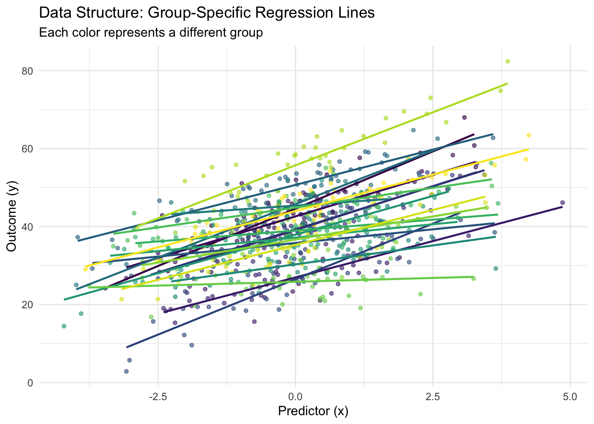

Chapter 7 Bayesian Multilevel Regression in Stan
7.1 Introduction
When analyzing data with inherent hierarchical structures—such as students nested within schools, patients within hospitals, or repeated measurements within individuals—traditional linear regression falls short by assuming independence among all observations. This assumption becomes problematic when observations within groups are more similar to each other than to observations from other groups, leading to underestimated standard errors and inflated Type I error rates.
Bayesian multilevel (mixed effects) regression models address this challenge by explicitly modeling the hierarchical structure of data through the incorporation of both fixed effects (population-level parameters) and random effects (group-specific parameters). Unlike their frequentist counterparts, Bayesian multilevel models leverage prior distributions to achieve partial pooling of information across groups, resulting in more stable parameter estimates and better predictive performance, particularly when dealing with small sample sizes within groups.
The fundamental insight of multilevel modeling lies in partial pooling—a middle ground between complete pooling (ignoring group structure) and no pooling (estimating parameters independently for each group). Through hierarchical priors, Bayesian models naturally shrink group-specific estimates toward the population mean in proportion to the uncertainty in group-level estimates, effectively borrowing strength across groups while preserving important group-level variation.
This comprehensive guide explores three fundamental approaches to Bayesian multilevel modeling: random intercepts models that allow baseline differences across groups, random slopes models that permit varying treatment effects, and hierarchical priors models that capture correlations between group-level parameters. We implement each approach in Stan, providing mathematical foundations, practical R code, and visualization techniques to illuminate the behavior of these models. Consider a dataset with \(i = 1, \ldots, n_j\) observations nested within \(j = 1, \ldots, J\) groups, where \(y_{ij}\) represents the outcome for observation \(i\) in group \(j\), and \(x_{ij}\) represents the corresponding predictor.
The general form of a multilevel model can be written as:
\[y_{ij} = \alpha_j + \beta_j x_{ij} + \epsilon_{ij}\]
where \(\epsilon_{ij} \sim N(0, \sigma^2)\) represents the individual-level residual. The group-specific parameters \(\alpha_j\) and \(\beta_j\) are themselves modeled as random variables:
\[\alpha_j = \alpha + u_{j}^{(\alpha)}\] \[\beta_j = \beta + u_{j}^{(\beta)}\]
where \(\alpha\) and \(\beta\) are population-level (fixed) effects, and \(u_{j}^{(\alpha)}\) and \(u_{j}^{(\beta)}\) are group-level random effects typically assumed to follow a multivariate normal distribution:
\[\begin{pmatrix} u_{j}^{(\alpha)} \\ u_{j}^{(\beta)} \end{pmatrix} \sim \mathcal{N}\left(\begin{pmatrix} 0 \\ 0 \end{pmatrix}, \mathbf{\Sigma}\right)\]
The covariance matrix \(\mathbf{\Sigma}\) captures both the variability of group-level effects and their potential correlation. This hierarchical structure enables the model to pool information across groups while accounting for group-specific variation.
7.2 Implementation in R
7.2.0.1 Data Generation and Preparation
To demonstrate these concepts, we’ll work with simulated data that exhibits realistic hierarchical structure. Our simulation includes correlated group effects to showcase the full capability of multilevel models.
library(tidyverse)
library(tidymodels)
library(rstan)
library(bayesplot)
library(ggplot2)
library(corrplot)
library(patchwork)
# Set random seed for reproducibility
set.seed(123)
# Data generation parameters
n_total <- 1000
n_groups <- 20
n_per_group <- n_total / n_groups
# Population-level parameters
alpha_pop <- 40 # population intercept
beta_pop <- 3 # population slope
sigma_y <- 4 # residual standard deviation
# Group-level variation parameters
sigma_alpha <- 8 # SD of group intercepts
sigma_beta <- 2 # SD of group slopes
rho <- 0.3 # correlation between random intercepts and slopes
# Create covariance matrix for group effects
Sigma_group <- matrix(c(sigma_alpha^2, rho * sigma_alpha * sigma_beta,
rho * sigma_alpha * sigma_beta, sigma_beta^2),
nrow = 2, ncol = 2)
# Generate group effects
group_effects <- MASS::mvrnorm(n_groups, mu = c(0, 0), Sigma = Sigma_group)
group_intercepts <- group_effects[, 1]
group_slopes <- group_effects[, 2]
# Generate individual-level data
group_id <- rep(1:n_groups, each = n_per_group)
x <- rnorm(n_total, mean = 0, sd = 1.5)
y <- (alpha_pop + group_intercepts[group_id]) +
(beta_pop + group_slopes[group_id]) * x +
rnorm(n_total, mean = 0, sd = sigma_y)
# Create dataset
data_full <- tibble(
y = y,
x = x,
group_id = factor(group_id),
group_intercept_true = group_intercepts[group_id],
group_slope_true = group_slopes[group_id]
)
# Train-test split
set.seed(42)
data_split <- initial_split(data_full, prop = 0.75, strata = group_id)## Warning: Too little data to stratify.
## • Resampling will be unstratified.train_data <- training(data_split)
test_data <- testing(data_split)
# Display data structure
cat("Dataset structure:\n")## Dataset structure:## Total observations: 1000## Number of groups: 20## Average observations per group: 50## Training set size: 750## Test set size: 250# Visualize the hierarchical structure
p1 <- ggplot(train_data, aes(x = x, y = y, color = group_id)) +
geom_point(alpha = 0.6, size = 1.2) +
geom_smooth(method = "lm", se = FALSE, size = 0.8) +
labs(title = "Data Structure: Group-Specific Regression Lines",
subtitle = "Each color represents a different group",
x = "Predictor (x)", y = "Outcome (y)") +
theme_minimal() +
theme(legend.position = "none") +
scale_color_viridis_d()
print(p1)## `geom_smooth()` using formula = 'y ~ x'
7.2.1 Random Intercepts Model: Modeling Baseline Differences
The random intercepts model represents the simplest multilevel structure, allowing each group to have its own baseline level while constraining all groups to have the same slope. This model is particularly useful when we believe the effect of our predictor is consistent across groups, but groups differ in their baseline outcomes.
Mathematically, the random intercepts model is specified as:
\[y_{ij} = (\alpha + u_j) + \beta x_{ij} + \epsilon_{ij}\]
where \(u_j \sim N(0, \sigma_\alpha^2)\) represents the group-specific deviation from the population intercept \(\alpha\). In the Bayesian framework, we place priors on all parameters, including hyperpriors on the variance components.
# Stan model for random intercepts
stan_code_intercepts <- "
data {
int<lower=0> N; // number of observations
int<lower=0> J; // number of groups
vector[N] y; // outcome variable
vector[N] x; // predictor variable
array[N] int<lower=1, upper=J> group_id; // group indicators
}
parameters {
real alpha; // population intercept
real beta; // population slope
real<lower=0> sigma_y; // residual standard deviation
real<lower=0> sigma_alpha; // standard deviation of group intercepts
vector[J] alpha_raw; // non-centered group intercepts
}
transformed parameters {
vector[J] alpha_group = alpha + sigma_alpha * alpha_raw; // centered parameterization
}
model {
// Priors
alpha ~ normal(40, 10);
beta ~ normal(3, 5);
sigma_y ~ exponential(0.2);
sigma_alpha ~ exponential(0.1);
alpha_raw ~ std_normal(); // non-centered parameterization
// Likelihood
for (n in 1:N) {
y[n] ~ normal(alpha_group[group_id[n]] + beta * x[n], sigma_y);
}
}
generated quantities {
vector[N] y_pred; // posterior predictive samples
vector[N] log_lik; // log-likelihood for model comparison
for (n in 1:N) {
y_pred[n] = normal_rng(alpha_group[group_id[n]] + beta * x[n], sigma_y);
log_lik[n] = normal_lpdf(y[n] | alpha_group[group_id[n]] + beta * x[n], sigma_y);
}
}
"
# Prepare data for Stan
stan_data_intercepts <- list(
N = nrow(train_data),
J = length(unique(train_data$group_id)),
y = train_data$y,
x = train_data$x,
group_id = as.numeric(train_data$group_id)
)
# Compile and fit the model
rstan_options(auto_write = TRUE)
options(mc.cores = parallel::detectCores())
fit_intercepts <- stan(
model_code = stan_code_intercepts,
data = stan_data_intercepts,
chains = 4,
iter = 2000,
warmup = 1000,
seed = 42
)## Warning: Bulk Effective Samples Size (ESS) is too low, indicating posterior means and medians may be unreliable.
## Running the chains for more iterations may help. See
## https://mc-stan.org/misc/warnings.html#bulk-ess## Inference for Stan model: anon_model.
## 4 chains, each with iter=2000; warmup=1000; thin=1;
## post-warmup draws per chain=1000, total post-warmup draws=4000.
##
## mean se_mean sd 2.5% 25% 50% 75% 97.5% n_eff Rhat
## alpha 39.21 0.11 1.88 35.55 37.90 39.19 40.50 42.94 314 1.00
## beta 3.39 0.00 0.11 3.17 3.31 3.39 3.47 3.61 1313 1.00
## sigma_y 4.64 0.00 0.12 4.42 4.56 4.64 4.72 4.88 1575 1.00
## sigma_alpha 8.27 0.08 1.42 5.96 7.25 8.11 9.13 11.45 315 1.01
##
## Samples were drawn using NUTS(diag_e) at Wed Oct 1 09:42:18 2025.
## For each parameter, n_eff is a crude measure of effective sample size,
## and Rhat is the potential scale reduction factor on split chains (at
## convergence, Rhat=1).# Extract posterior samples
posterior_intercepts <- rstan::extract(fit_intercepts)
# Visualization of results
alpha_group_post <- summary(fit_intercepts, pars = "alpha_group")$summary
alpha_group_est <- alpha_group_post[, "mean"]
alpha_group_lower <- alpha_group_post[, "2.5%"]
alpha_group_upper <- alpha_group_post[, "97.5%"]7.2.2 Random Slopes Model: Capturing Varying Effects
The random slopes model extends the random intercepts approach by allowing both intercepts and slopes to vary across groups. This flexibility is crucial when the effect of a predictor genuinely differs across groups, such as when educational interventions have varying effectiveness across different schools.
The mathematical specification becomes:
\[y_{ij} = (\alpha + u_j^{(\alpha)}) + (\beta + u_j^{(\beta)}) x_{ij} + \epsilon_{ij}\]
where both \(u_j^{(\alpha)}\) and \(u_j^{(\beta)}\) are group-specific random effects that may be correlated.
# Stan model for random slopes
stan_code_slopes <- "
data {
int<lower=0> N;
int<lower=0> J;
vector[N] y;
vector[N] x;
array[N] int<lower=1, upper=J> group_id;
}
parameters {
real alpha; // population intercept
real beta; // population slope
real<lower=0> sigma_y; // residual standard deviation
vector<lower=0>[2] sigma_group; // standard deviations of group effects
cholesky_factor_corr[2] L_Rho; // Cholesky factor of correlation matrix
matrix[2, J] z_group; // non-centered group effects
}
transformed parameters {
matrix[J, 2] group_effects;
group_effects = (diag_pre_multiply(sigma_group, L_Rho) * z_group)';
}
model {
// Priors
alpha ~ normal(40, 10);
beta ~ normal(3, 5);
sigma_y ~ exponential(0.2);
sigma_group ~ exponential(0.1);
L_Rho ~ lkj_corr_cholesky(2);
to_vector(z_group) ~ std_normal();
// Likelihood
for (n in 1:N) {
y[n] ~ normal(alpha + group_effects[group_id[n], 1] +
(beta + group_effects[group_id[n], 2]) * x[n], sigma_y);
}
}
generated quantities {
matrix[2, 2] Rho = L_Rho * L_Rho'; // correlation matrix
vector[N] y_pred;
vector[N] log_lik;
for (n in 1:N) {
y_pred[n] = normal_rng(alpha + group_effects[group_id[n], 1] +
(beta + group_effects[group_id[n], 2]) * x[n], sigma_y);
log_lik[n] = normal_lpdf(y[n] | alpha + group_effects[group_id[n], 1] +
(beta + group_effects[group_id[n], 2]) * x[n], sigma_y);
}
}
"
# Fit random slopes model
fit_slopes <- stan(
model_code = stan_code_slopes,
data = stan_data_intercepts,
chains = 4,
iter = 2000,
warmup = 1000,
seed = 42
)
print(fit_slopes, pars = c("alpha", "beta", "sigma_y", "sigma_group", "Rho"))## Inference for Stan model: anon_model.
## 4 chains, each with iter=2000; warmup=1000; thin=1;
## post-warmup draws per chain=1000, total post-warmup draws=4000.
##
## mean se_mean sd 2.5% 25% 50% 75% 97.5% n_eff Rhat
## alpha 39.25 0.06 1.84 35.73 37.99 39.25 40.47 42.91 848 1.00
## beta 3.30 0.01 0.42 2.46 3.02 3.29 3.57 4.14 1275 1.00
## sigma_y 4.02 0.00 0.10 3.81 3.95 4.01 4.09 4.23 2995 1.00
## sigma_group[1] 8.32 0.05 1.45 5.96 7.31 8.18 9.12 11.67 707 1.01
## sigma_group[2] 1.79 0.01 0.35 1.25 1.54 1.74 1.99 2.59 1135 1.00
## Rho[1,1] 1.00 NaN 0.00 1.00 1.00 1.00 1.00 1.00 NaN NaN
## Rho[1,2] 0.24 0.00 0.20 -0.16 0.11 0.25 0.38 0.61 1584 1.00
## Rho[2,1] 0.24 0.00 0.20 -0.16 0.11 0.25 0.38 0.61 1584 1.00
## Rho[2,2] 1.00 0.00 0.00 1.00 1.00 1.00 1.00 1.00 3944 1.00
##
## Samples were drawn using NUTS(diag_e) at Wed Oct 1 09:43:12 2025.
## For each parameter, n_eff is a crude measure of effective sample size,
## and Rhat is the potential scale reduction factor on split chains (at
## convergence, Rhat=1).# Extract and visualize group effects
group_effects_post <- summary(fit_slopes, pars = "group_effects")$summary
group_effects_matrix <- matrix(group_effects_post[, "mean"], nrow = n_groups, ncol = 2)
slopes_comparison <- tibble(
group = 1:n_groups,
true_intercept = group_intercepts,
true_slope = group_slopes,
est_intercept = group_effects_matrix[, 1],
est_slope = group_effects_matrix[, 2]
)
p3 <- slopes_comparison %>%
ggplot(aes(x = true_slope, y = est_slope)) +
geom_abline(intercept = 0, slope = 1, linetype = "dashed", color = "red") +
geom_point(size = 3, alpha = 0.7, color = "steelblue") +
labs(title = "Random Slopes: Estimated vs. True Group Slopes",
x = "True Group Slopes",
y = "Estimated Group Slopes") +
theme_minimal() +
coord_fixed()
p4 <- slopes_comparison %>%
ggplot(aes(x = est_intercept, y = est_slope)) +
geom_point(size = 3, alpha = 0.7, color = "darkgreen") +
geom_smooth(method = "lm", se = TRUE, color = "red") +
labs(title = "Correlation Between Group Intercepts and Slopes",
subtitle = paste("Estimated correlation:",
round(summary(fit_slopes, pars = "Rho")$summary[2, "mean"], 3)),
x = "Group Intercepts",
y = "Group Slopes") +
theme_minimal()
print(p3 + p4)## `geom_smooth()` using formula = 'y ~ x'
7.2.3 Model Comparison and Visualization
To understand the practical differences between these approaches, we’ll compare their predictive performance and examine how they handle the bias-variance tradeoff inherent in multilevel modeling.
# Extract log-likelihood for model comparison
log_lik_intercepts <- extract_log_lik(fit_intercepts)
log_lik_slopes <- extract_log_lik(fit_slopes)
# Calculate WAIC for model comparison
waic_intercepts <- waic(log_lik_intercepts)
waic_slopes <- waic(log_lik_slopes)
# Display model comparison
cat("Model Comparison (WAIC):\n")
cat("Random Intercepts WAIC:", round(waic_intercepts$estimates["waic", "Estimate"], 2), "\n")
cat("Random Slopes WAIC:", round(waic_slopes$estimates["waic", "Estimate"], 2), "\n")
cat("Difference:", round(waic_intercepts$estimates["waic", "Estimate"] -
waic_slopes$estimates["waic", "Estimate"], 2), "\n")
# Posterior predictive checks
y_pred_intercepts <- posterior_intercepts$y_pred
y_pred_slopes <- rstan::extract(fit_slopes)$y_pred
ppc_intercepts <- ppc_dens_overlay(train_data$y, y_pred_intercepts[1:100, ]) +
ggtitle("Posterior Predictive Check: Random Intercepts")
ppc_slopes <- ppc_dens_overlay(train_data$y, y_pred_slopes[1:100, ]) +
ggtitle("Posterior Predictive Check: Random Slopes")
print(ppc_intercepts + ppc_slopes)
# Residual analysis
residuals_intercepts <- train_data$y - colMeans(y_pred_intercepts)
residuals_slopes <- train_data$y - colMeans(y_pred_slopes)
residual_comparison <- tibble(
observed = rep(train_data$y, 2),
residuals = c(residuals_intercepts, residuals_slopes),
model = rep(c("Random Intercepts", "Random Slopes"), each = length(residuals_intercepts)),
group_id = rep(train_data$group_id, 2)
)
p5 <- ggplot(residual_comparison, aes(x = observed, y = residuals)) +
geom_point(alpha = 0.6) +
geom_hline(yintercept = 0, linetype = "dashed", color = "red") +
geom_smooth(method = "loess", se = FALSE) +
facet_wrap(~model) +
labs(title = "Residual Analysis: Model Comparison",
x = "Observed Values", y = "Residuals") +
theme_minimal()
print(p5)7.3 Visualization and Interpretation
Understanding multilevel models requires visualizing both the population-level and group-level effects. The following visualizations illuminate the key concepts of shrinkage and partial pooling.
# Create comprehensive visualization of group effects
group_summary <- train_data %>%
group_by(group_id) %>%
summarise(
n = n(),
mean_y = mean(y),
mean_x = mean(x),
.groups = "drop"
) %>%
mutate(
group_num = as.numeric(group_id),
est_intercept_ri = alpha_group_est,
est_intercept_rs = group_effects_matrix[, 1],
est_slope_rs = group_effects_matrix[, 2],
true_intercept = group_intercepts,
true_slope = group_slopes
)
# Shrinkage visualization
p6 <- group_summary %>%
ggplot(aes(x = n)) +
geom_point(aes(y = abs(est_intercept_ri - true_intercept)),
color = "blue", alpha = 0.7, size = 2) +
geom_smooth(aes(y = abs(est_intercept_ri - true_intercept)),
method = "loess", color = "blue", se = FALSE) +
labs(title = "Shrinkage Effect: Estimation Error vs. Group Sample Size",
subtitle = "Smaller groups show more shrinkage toward population mean",
x = "Group Sample Size",
y = "Absolute Estimation Error") +
theme_minimal()
# Correlation structure visualization
posterior_rho <- rstan::extract(fit_slopes)$Rho[, 1, 2]
p7 <- tibble(rho = posterior_rho) %>%
ggplot(aes(x = rho)) +
geom_histogram(bins = 30, fill = "steelblue", alpha = 0.7, color = "white") +
geom_vline(xintercept = rho, color = "red", linetype = "dashed", size = 1) +
geom_vline(xintercept = mean(posterior_rho), color = "blue", size = 1) +
labs(title = "Posterior Distribution of Intercept-Slope Correlation",
subtitle = paste("True correlation (red):", rho,
"| Estimated mean (blue):", round(mean(posterior_rho), 3)),
x = "Correlation", y = "Density") +
theme_minimal()
print(p6 + p7)## `geom_smooth()` using formula = 'y ~ x'# Group-specific predictions visualization
pred_data <- expand_grid(
x = seq(min(train_data$x), max(train_data$x), length.out = 50),
group_id = factor(1:min(6, n_groups)) # Show first 6 groups
) %>%
mutate(group_num = as.numeric(group_id))
# Add predictions from random slopes model
group_effects_sample <- group_effects_matrix[pred_data$group_num, ]
pred_data$y_pred <- (alpha_pop + group_effects_sample[, 1]) +
(beta_pop + group_effects_sample[, 2]) * pred_data$x
p8 <- ggplot() +
geom_point(data = filter(train_data, as.numeric(group_id) <= 6),
aes(x = x, y = y, color = group_id), alpha = 0.6) +
geom_line(data = pred_data, aes(x = x, y = y_pred, color = group_id),
size = 1.2) +
facet_wrap(~group_id, ncol = 3, labeller = label_both) +
labs(title = "Group-Specific Predictions: Random Slopes Model",
subtitle = "Points show observed data, lines show group-specific regression",
x = "Predictor (x)", y = "Outcome (y)") +
theme_minimal() +
theme(legend.position = "none") +
scale_color_viridis_d()
print(p8)7.4 Conclusion
Bayesian multilevel regression models provide a principled approach to analyzing hierarchical data structures, offering several key advantages over traditional regression methods. Through the implementation of random intercepts, random slopes, and hierarchical priors in Stan, we have demonstrated how these models achieve partial pooling of information across groups, resulting in more robust parameter estimates and improved predictive performance.
The random intercepts model proves most useful when groups differ primarily in baseline levels but exhibit similar relationships between predictors and outcomes. This approach provides substantial computational efficiency while capturing the essential hierarchical structure. The random slopes model extends this flexibility by allowing treatment effects to vary across groups, making it ideal for situations where intervention effectiveness or predictor relationships genuinely differ between contexts.
The mathematical foundation of these models reveals their elegant handling of the bias-variance tradeoff through hierarchical shrinkage. Groups with smaller sample sizes experience greater shrinkage toward population estimates, while groups with more data retain their distinctive characteristics. This adaptive borrowing of strength across groups represents a fundamental advantage of the Bayesian approach.
From a practical standpoint, several recommendations emerge from our analysis. First, always examine the correlation structure between random effects, as this often reveals important insights about the underlying data-generating process. Second, use posterior predictive checks and residual analysis to validate model assumptions and identify potential improvements. Third, consider the computational trade-offs between model complexity and interpretability, particularly when working with large numbers of groups or complex hierarchical structures.
The Stan implementations presented here incorporate modern best practices, including non-centered parameterization for improved sampling efficiency and appropriate prior specifications that regularize estimates without overwhelming the data. These technical considerations prove crucial for achieving reliable convergence and meaningful posterior inference in practice.
Future extensions of these models might include temporal dynamics, non-linear relationships, or more complex hierarchical structures with multiple levels of nesting. The Bayesian framework naturally accommodates such extensions while maintaining coherent uncertainty quantification throughout the modeling process, making it an invaluable tool for modern data analysis in the presence of hierarchical structures.
7.5 References
- Gelman, A., & Hill, J. (2006). Data Analysis Using Regression and Multilevel/Hierarchical Models. Cambridge University Press.
- Stan Development Team. (2023). Stan User’s Guide: Hierarchical Models. https://mc-stan.org/docs/stan-users-guide/hierarchical.html
- McElreath, R. (2020). Statistical Rethinking: A Bayesian Course with Examples in R and Stan. CRC Press.
- Sorensen, T., & Vasishth, S. (2015). Bayesian linear mixed models using Stan. Journal of Statistical Software, 80(1), 1-28.